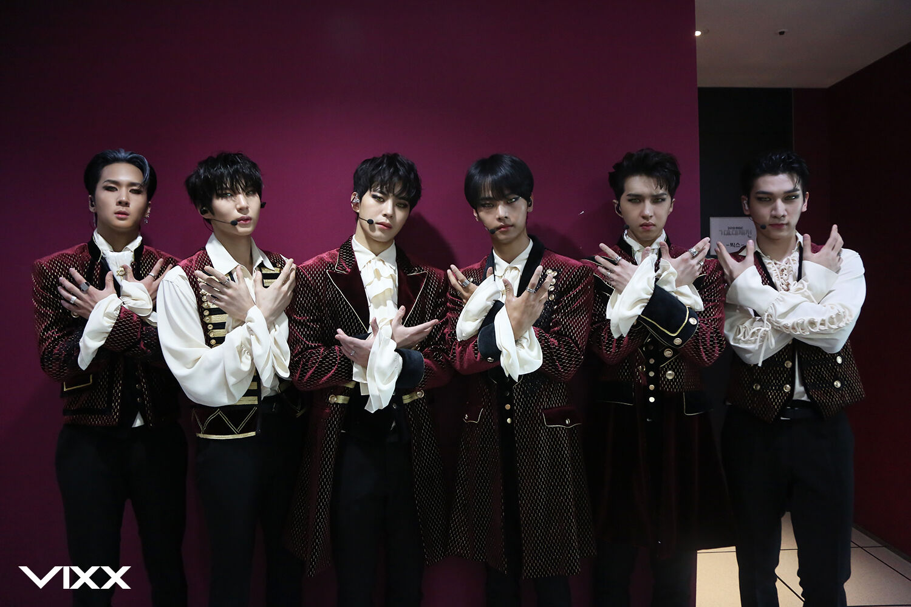
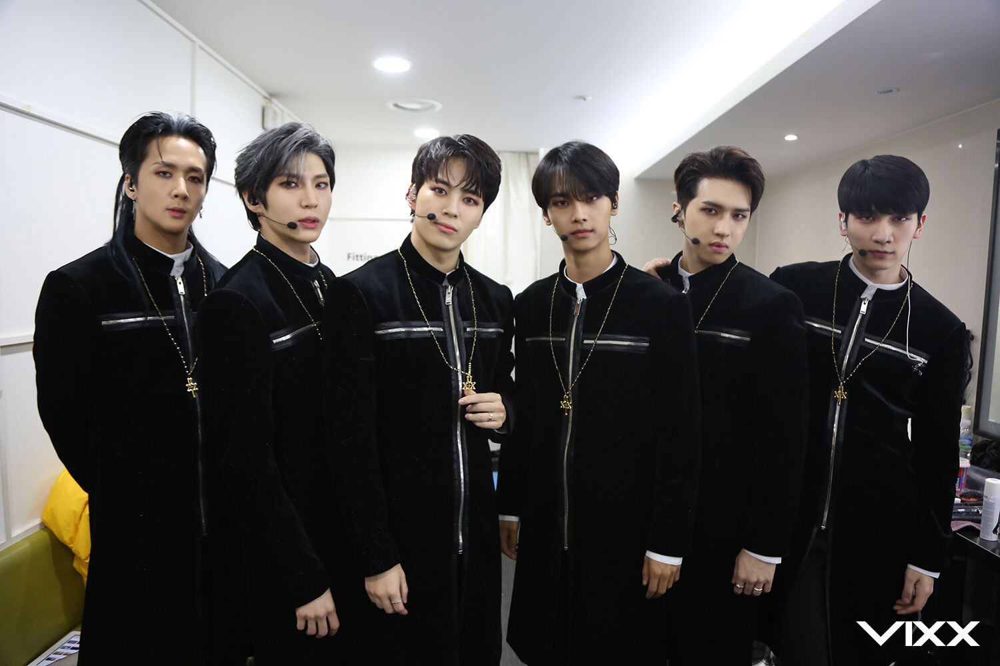

We're Real V! V.I.X.X VIXX!
VIXX is a South Korean boy band formed by Jellyfish Entertainment through the 2012 reality show MyDOL. The group is composed of six members: N, Leo, Ken, Ravi, Hongbin and Hyuk. They are predominantly known as a concept or performance group whose music, lyrics, choreography, and overall stage performances are crafted together to tell a story or concept.
 